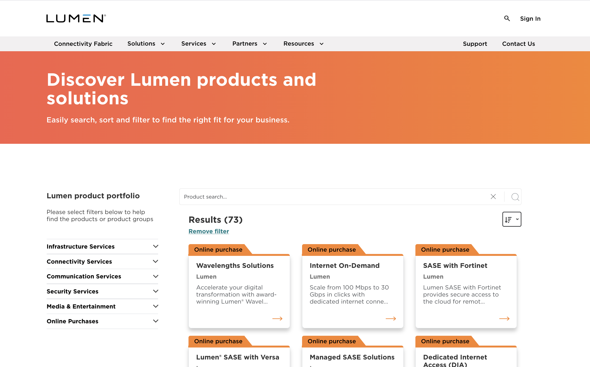
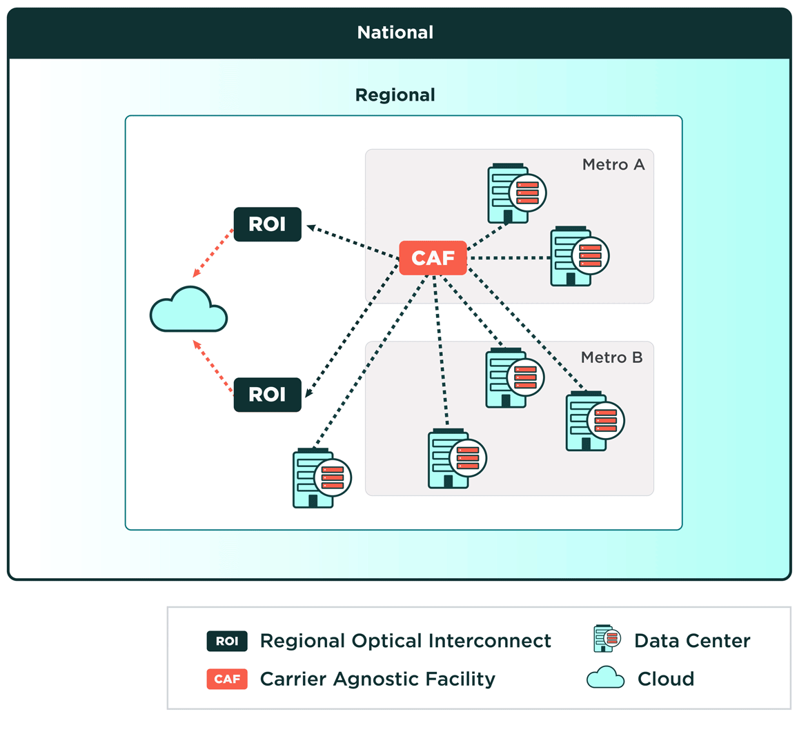
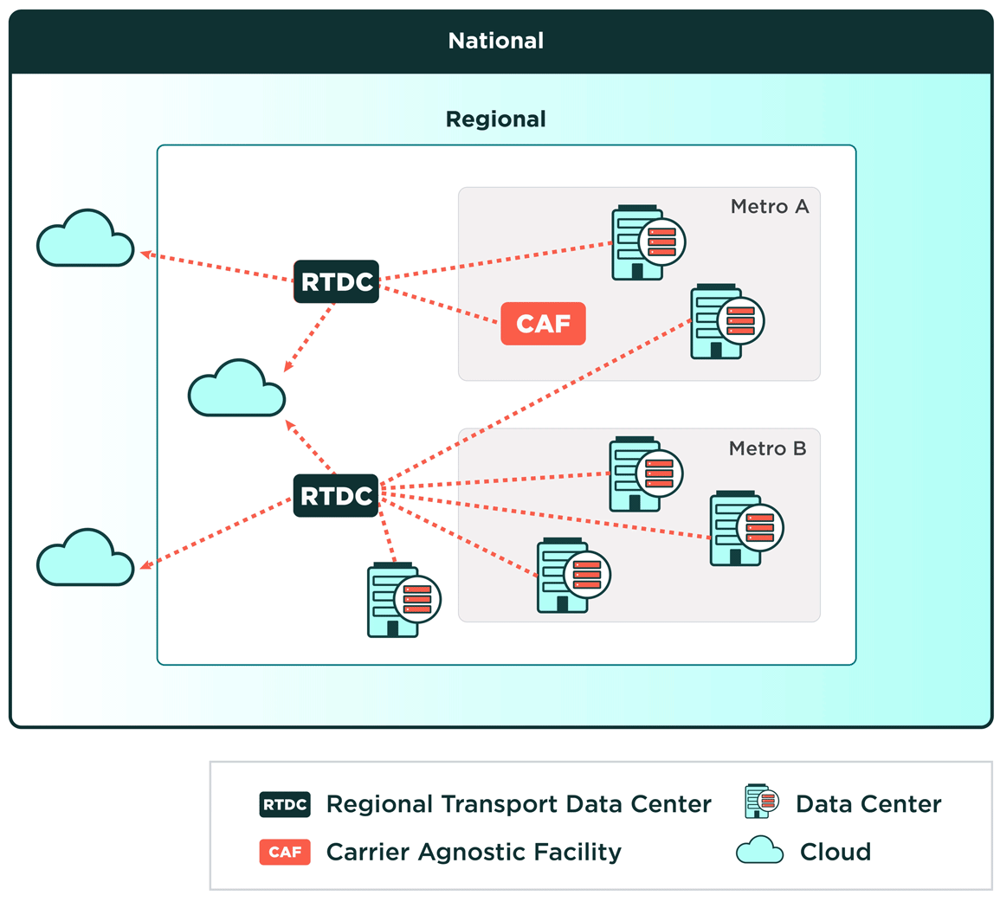
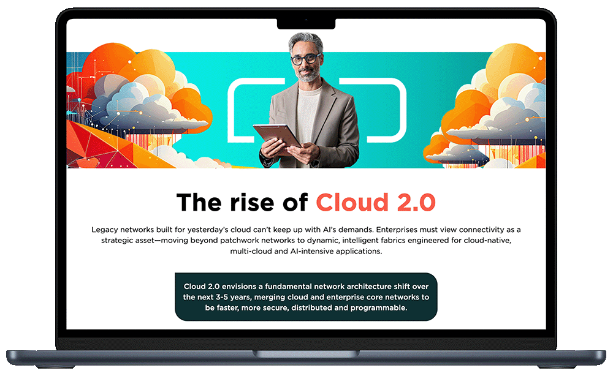
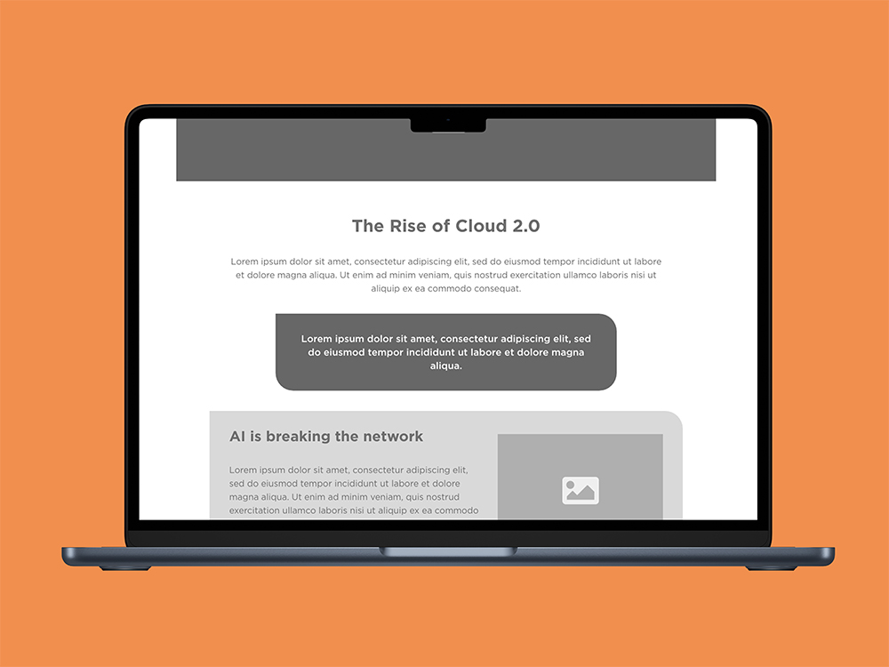
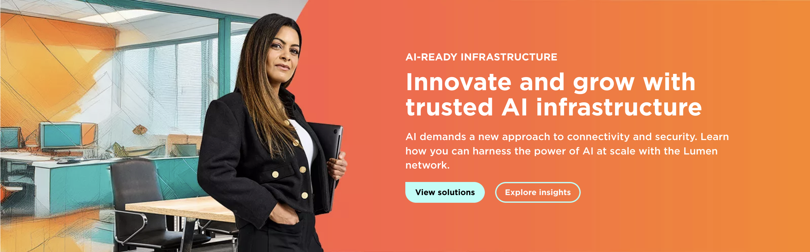
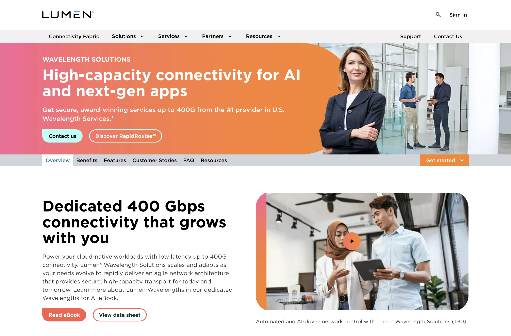
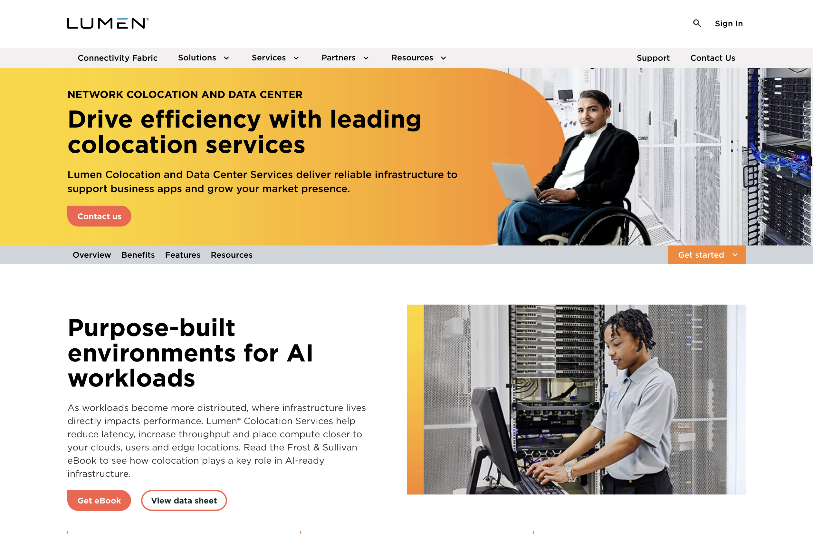
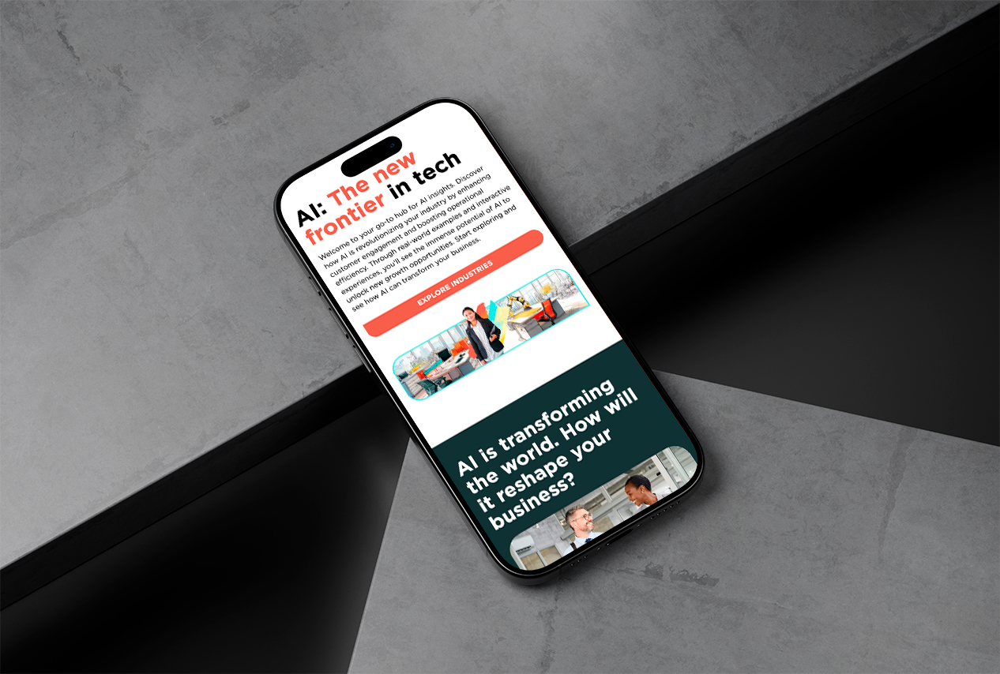

Visual Designer & Developer · 2021–2024
Three years embedded inside a Fortune 500. Four flagship projects delivered under enterprise constraints — cross-functional reviews, CMS limitations, tight deadlines, and audiences that demand technical credibility. Every piece required the full stack: research, design, code, motion, and testing.
An interactive quiz-style decision tool built to guide enterprise buyers through Lumen's complex product portfolio. Users answer a branching series of questions about their network needs and receive a curated product recommendation — reducing sales friction and increasing qualified lead quality.
I led the full UX flow — mapping the decision tree, designing each state in Figma, building the interaction logic in JavaScript, and QA-ing across device breakpoints. Every transition and micro-interaction was tuned for clarity and trust.
View Live
A scroll-driven animated infographic mapping Lumen's network evolution — produced for a campaign landing page. Enterprise infrastructure is notoriously hard to visualize. This piece made it tangible: motion reinforces the narrative, hierarchy guides the eye, and every diagram earned its place through storyboarding and iteration.
I handled end-to-end production: wireframing in Figma, motion prototyping in After Effects, CSS/JS implementation in ION Interactive's CMS, and final accessibility and performance QA.
View Live






A continuous stream of design and development work — maintaining page integrity across Lumen's digital properties. Updates ranged from layout tweaks and accessibility remediations to full responsive overhauls and cross-browser bug fixes, all shipped under daily production cycles.
This work sharpened the operational side of design — reading inherited codebases fast, making high-confidence changes under time pressure, and keeping quality consistent across hundreds of discrete touchpoints.

A design and presentation framework built to visualize Lumen's AI product suite — translating abstract infrastructure capabilities into a tactile, interactive experience layer. The challenge: make enterprise AI feel real, not theoretical, to a technically sophisticated audience.
I led the visual system design and built the interactive prototype from scratch — defining hierarchy, motion language, and a component architecture that could flex across future product announcements without redesign.
View LiveThree years of production across campaign systems, product tools, and interdepartmental collaboration, each piece positioning Lumen as a technically credible, design-forward enterprise brand. The work demanded the full range: research and strategy at the top, pixel-level execution at the bottom, motion, engineering and has shaped the creator I am today.